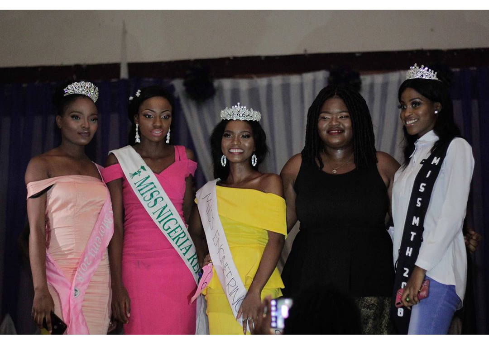

Engineering Career Expo(ECX)
Launched in 2019,ECX is aimed at bridging the gap between students and the industry.At ECX,both technical and soft skills are taught to students at no cost.
The technical skills taught are:Python,Front End Development,Back End Development,UI/UX Design,Engineering Design and Andriod Development.


Engineering Ladies Day (ELD)
Engineering Ladies Day is a day set aside to celebrate the lovely ladies in the faculty.This event started in 2014 and has been held every year since then.
The starts off with a mentoring session where the ladies are mentored by women in the industry,healt practitioners and women of other fields.
The day ends with a dinner and pageantry where the miss engineering is crowned.

Professor Ayodele Awojobi Design Competition (PAADC )
In 2016,a design competition was created and it was named after the Late Professor Ayodele Awojobi.
The competition is open to all university students across the country.Participants submit their entries and the winner is decided by a panel and is announced at the grand finale.
Paadc is the first of its kind in Nigeria and it is highly recognised in the country.

ULES Orators and Writers
Asides from calculating and designing,we found out that some engineering students are talented in public speaking and writing;and this was why the Ules Orators &Writers club was created.
The orators are trained by professionals and participate in debates which leads them to the Debate Championship.
The writers are given writing challenges every week and a writer of the week is selected and celebrated.
Faculty Week
To celebrate the final year students,during the second semester the faculty holds a faculty week;where a series of events take place.
The activities include Cooperate Day(Monday),Jersey Day(Tuesday),Denim Day(Wednesday),Costume Day(Thursday) & Trad Day(Friday).
The event is usually fun and colourful.


ULES Games/Sports Festival
Sports is a very important part of the society and we also recognize that and that’s we hold a sport festival annually.
Our sport lineup includes football,volleyball,tennis,track events and many other sports.